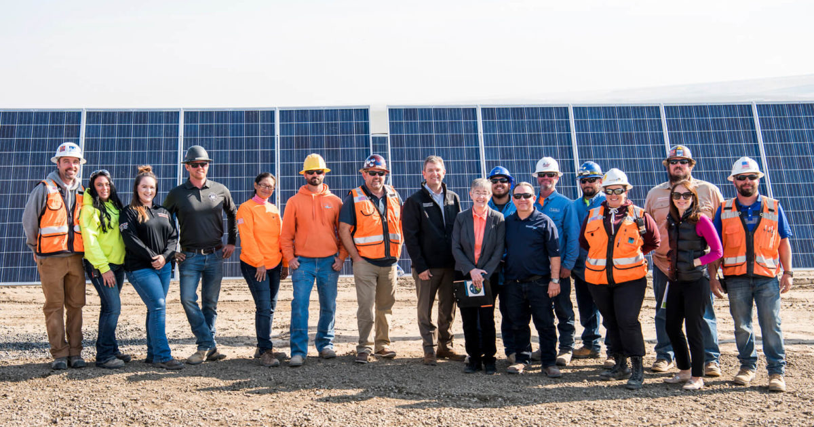

We're a global movement of common citizens working to put an end to the fossil fuel era and create a future where everybody will benefit from community-led renewable energy. We're building a community around one simple vision: give people the power and trust to join together and minimize carbon emissions, which causes climate change, by combining science, experience, and accountability. Climate change is a struggle for justice. People all over the world are experiencing the effects, but those who have contributed the least to the crisis are the ones who are struggling the worst. The inequality must be addressed in the job we do — and the ways we do it. Listening to the groups that have been affected the hardest, amplifying the voices that have been suppressed, and following the example of those on the frontlines of the crisis are all part of this. JOIN OUR FAMILY!
Brooklyn is among the five boroughs of New York, Southern Long Island, Southern New York, and the U.S. This proposal will be directed to the representatives of the borough of Brooklyn on how to go green while discussing the benefits of going green and the planned out cost, and the estimated time. Electricity has many beneficial factors in our lives that almost all of us cannot do without it. Electricity has a broader range of use starting from internet surfing to watching television and cooking; it is to no doubt that it is something fundamental to our daily lives for our daily activities. We can consider going green using an alternative source of electricity, solar energy, wind energy, geothermal, and avoiding monthly electricity bills. Solar energy is the conversion of sun rays to electrical energy (Waddock et al.132). This energy will be transformed through solar panels' electricity system using photovoltaic cells that catch the sun's energy. JOIN OUR FAMILY!
Nonrenewable energy resources are commonly found in specific areas of the planet, with certain countries having more than others. Any country, on the other hand, has access to sunlight and wind. This is one of the many reasons that this world should stop relying on dirty energy to sustain everyone’s way of life. A great solution to the problem of stopping the use of nonrenewable energy is wind power. Wind power is a great alternative to using dirty energy, because it uses the earth’s natural wind.
Several benefits make homeowners go for solar apart from cutting on energy costs reasons and improving the environment (Porter 95). It is also essential to know how the process of the solar system can be used in energy creation for us to benefit. Solar energy helps in reducing the carbon footprint. Research has proven that there are typical solar panel systems used in residential areas that can reduce up to a maximum of three to four times carbon dioxide emissions every year. This is equivalent to planting over 100 trees per year. Going green means that we live in a cleaner and safer environment that is very important to save a life. Solar panels are very important as they do not harm our environment; they do not pollute water and do not produce harmful gases, making them fortunate. Recently the uses of fossil fuels have led to global warming. Global warming is an environmental issue affecting the lives of humans, animals, and nature. Thorough research has proven that the use of solar panel systems can help reduce the effects of global warming and reduce energy consumption.
1. The location of Brooklyn would work perfectly for geothermal power plants.